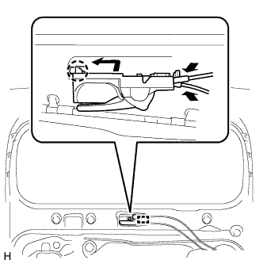
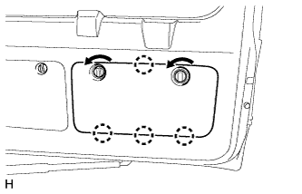

ЗАМОК ДВЕРИ БАГАЖНОГО ОТДЕЛЕНИЯ > УСТАНОВКА |
| 1. УСТАНОВИТЕ ЗАМОК ДВЕРИ БАГАЖНОГО ОТДЕЛЕНИЯ В СБОРЕ |
 |
Подсоедините кабель.
Установите новое уплотнение жгута проводов замка двери на замок передней двери в сборе.
 |
Установите замок двери багажного отделения и закрепите его 3 винтами с помощью торцевого ключа "TORX" T30.
| *A | для моделей в стандартной комплектации |
| *B | для моделей с кронштейном запасного колеса на двери багажного отделения, с противоположно расположенными сиденьями |
Подсоедините разъем.
| 2. УСТАНОВИТЕ КРЫШКУ ТЕХНОЛОГИЧЕСКОГО ОТВЕРСТИЯ ДВЕРИ БАГАЖНОГО ОТДЕЛЕНИЯ |
 |
Наклейте новую бутиловую ленту на панель задней двери багажного отделения.
Закрепите крышку технологического отверстия задней двери, используя контрольные точки на панели задней двери.
| *1 | Контрольная точка |
| 3. УСТАНОВИТЕ ВНУТРЕННЮЮ РУЧКУ ДВЕРИ В СБОРЕ (для моделей с кронштейном запасного колеса на двери багажного отделения, с противоположно расположенными сиденьями) |
|  |
Подсоедините 2 троса к внутренней ручке в сборе.
Введите в зацепление захваты и направляющую, чтобы установить внутреннюю ручку в сборе.
| 4. УСТАНОВИТЕ ПАНЕЛЬ ОБЛИЦОВКИ ДВЕРИ БАГАЖНОГО ОТДЕЛЕНИЯ В СБОРЕ |
Для моделей без кронштейна запасного колеса на двери багажного отделения:
Введите в зацепление 15 фиксаторов, чтобы установить облицовочную панель двери багажного отделения.
Вверните болт.
Для моделей с кронштейном запасного колеса на двери багажного отделения:
Введите в зацепление 16 фиксаторов, чтобы установить облицовочную панель двери багажного отделения.
Вверните болт.
Для моделей с противоположно расположенными сиденьями:
Введите в зацепление 15 фиксаторов, чтобы установить облицовочную панель двери багажного отделения.
Вверните болт.
Заверните винт.
Введите в зацепление захват, чтобы установить крышку.
| 5. УСТАНОВИТЕ ОПРАВУ ВНУТРЕННЕЙ РУЧКИ ДВЕРИ БАГАЖНОГО ОТДЕЛЕНИЯ (для моделей с кронштейном запасного колеса на двери багажного отделения, с противоположно расположенными сиденьями) |
Введите в зацепление 5 захватов, чтобы установить оправу внутренней ручки двери багажного отделения.
Вверните винт.
| 6. УСТАНОВИТЕ КРЫШКУ ЗАМКА ДВЕРИ БАГАЖНОГО ОТДЕЛЕНИЯ (для моделей без кронштейна запасного колеса на двери багажного отделения, в стандартной комплектации) |
Введите в зацепление 6 захватов, чтобы установить крышку замка двери багажного отделения.
| 7. УСТАНОВИТЕ ЯЩИК ДЛЯ ИНСТРУМЕНТОВ |
Введите в зацепление 2 захвата, чтобы установить ящик для инструментов.
| 8. УСТАНОВИТЕ ВЕРХНЮЮ ПАНЕЛЬ ЯЩИКА ДЛЯ ИНСТРУМЕНТОВ В СБОРЕ |
 |
Введите в зацепление 3 захвата.
Установите верхнюю панель ящика для инструментов, как показано на рисунке.
| 9. УСТАНОВИТЕ ОБЛИЦОВОЧНУЮ НАКЛАДКУ ДВЕРИ БАГАЖНОГО ОТДЕЛЕНИЯ |
|  |
Введите в зацепление 4 захвата.
Установите облицовочную накладку двери багажного отделения, как показано на рисунке.
| 10. УСТАНОВИТЕ ЛЕВУЮ БОКОВУЮ ОБЛИЦОВКУ ДВЕРИ БАГАЖНОГО ОТДЕЛЕНИЯ |
Установите боковую облицовку двери багажного отделения, закрепив ее 2 фиксаторами.
| 11. УСТАНОВИТЕ ПРАВУЮ БОКОВУЮ ОБЛИЦОВКУ ДВЕРИ БАГАЖНОГО ОТДЕЛЕНИЯ |
Установите боковую облицовку двери багажного отделения, закрепив ее 2 фиксаторами.
| 12. УСТАНОВИТЕ ЦЕНТРАЛЬНУЮ ОБЛИЦОВКУ ДВЕРИ БАГАЖНОГО ОТДЕЛЕНИЯ |
Введите в зацепление 4 фиксатора и установите центральную облицовку двери багажного отделения.